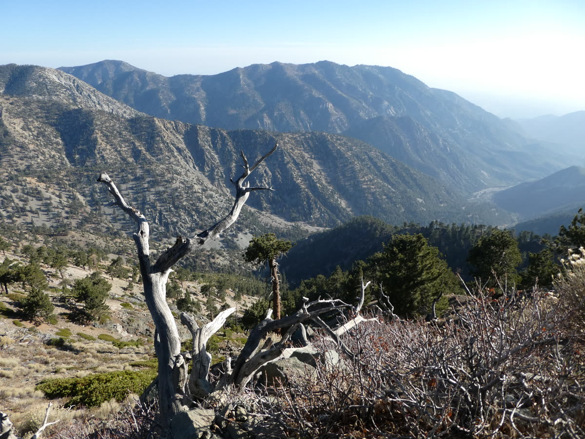

Living in Claremont means the foothills are our collective backyard. But as any local knows, a "quick hike" can quickly turn into a parking ticket or a heat-exhaustion headache if you don't have a plan. Whether you're training for a marathon, looking for a stroller-friendly sunset walk, or brave enough to tackle the "Final Boss" (Mt. Baldy), this is your definitive guide to the trails of the 91711.
Trail Rankings: At-A-Glance
| Trail | Difficulty | Views | Crowds | Best For |
|---|---|---|---|---|
| CHWP Main Loop | Moderate | ★★★★ | High | People-watching & distance — go early in summer |
| Potato Mountain | Moderate+ | ★★★ | Medium | The “Potato” tradition |
| Marshall Canyon | Easy/Mod | ★★★ | Low | Shade & mountain bikers |
| Johnson's Pasture | Easy | ★★★★ | Low | Golden hour walks & strollers |
| Thompson Creek Trail | Easy | ★★ | Low | Joggers, cyclists & strollers |
| Mt. Baldy (Summit) | Expert | ★★★★★ | High | Bragging rights & burgers |
1. The Heavyweight: Claremont Hills Wilderness Park
This is the "Old Faithful" of Claremont. The 5-mile loop is a rite of passage, but there's a strategy to mastering it.
CHWP Main Loop
The “Counter-Clockwise” Hack: Most people go clockwise (starting at the steep incline). If you want to save your knees on the descent, go counter-clockwise. It's a longer, gradual climb but much easier on the joints.
The “Parent” Pivot: If you have a 10-month-old in a carrier, the first half-mile of the south entrance is relatively flat and wide — perfect for a "nature fix" without committing to the full 5 miles.
The Sun Factor: There's almost no shade on the Loop, so summer can get brutal. Beautiful in winter and shoulder seasons; if you're going June–September, be at the trailhead earlier in the morning. The views are worth it any time of year — timing just matters.
Parking Permits (2026 Rates)
You must have a permit for the north and south lots.
4 hours: $5.00 weekdays · $9.00 weekends/holidays
6 hours: $6.00 weekdays · $10.00 weekends/holidays
Annual: $170.00 (valid for 365 days)
Claremont residents park FREE for 6 hours in the Thompson Creek Trail (south) lot — no permit pickup needed. At the meter, just scan your valid California driver's license (with a Claremont address) and enter your plate.
2. The Incline King: Potato Mountain
Technically starting just north of the Evey Canyon area, Potato Mountain is famous for the summit where hikers leave — you guessed it — potatoes.
Potato Mountain
The Workout: It's a 4.5-mile out-and-back with significant elevation gain. It's a fire road, so it's wide, but the sun is relentless.
The Tradition: Bring a potato (and a Sharpie) to leave your mark at the top. It's a Claremont tradition that never gets old. On a clear day, you can see all the way to Catalina.
3. The Hidden Gem: Marshall Canyon
If you want to escape the "see and be seen" vibe of the Wilderness Park, head west to Marshall Canyon (accessible via Stephens Ranch Rd).
Marshall Canyon
The Vibe: Unlike the exposed fire roads of CHWP, Marshall Canyon offers significant tree cover and runs alongside a seasonal creek.
The Crowds: Much lower than the Loop, but keep your ears open for mountain bikers — this is their favorite local playground.
4. The Golden Hour Walk: Johnson's Pasture
Wide open meadows, wildflowers in spring, and gentle slopes that make this one of the most peaceful spots in the Claremont foothills.
Johnson's Pasture
Why Locals Love It: The open meadow views are some of the best in Claremont — especially at golden hour, when the grass turns amber and the San Gabriels glow behind you. It's the kind of hike where you forget you're 30 miles from downtown LA.
The Family Pick: Gentle slopes make this stroller-accessible on the lower trails. Wildflowers carpet the hillsides in spring (peak: March–April), and there's almost always room to spread out. One of the quietest spots in the foothills.
Park Hours: Johnson Pasture officially closes at sunset, so plan to be back at your car by then. Golden hour (the 45–60 minutes before sunset) is the sweet spot — you'll catch the best light and still be off-trail in time.
5. The Everyday Path: Thompson Creek Trail
Not every day calls for a mountain. Sometimes you just need a flat, shady path to clear your head.
Thompson Creek Trail
The Vibe: A paved, flat path that runs alongside Thompson Creek — perfect for joggers, cyclists, and families with strollers. Shady stretches and a serene atmosphere make this the go-to for an everyday outing without any elevation commitment.
The Local Secret: This trail connects to the south entrance of the Wilderness Park, so you can start here and gradually work your way up if you're feeling ambitious. Bonus for locals: Claremont residents park free for 6 hours in this very lot — just scan your driver's license at the meter, no permit pickup required.
6. The Final Boss: Mt. San Antonio (Mt. Baldy)
Visible from almost everywhere in town, "Old Baldy" is the highest point in LA County (10,064 ft). This isn't just a hike; it's an alpine expedition.
Mt. San Antonio (Mt. Baldy)
The “Chairlift Hack”: You can take the Mt. Baldy Resort Sugar Pine Chairlift up to the Top of the Notch restaurant for about $40 (book online to save — it's pricier at the door). This skips the first 1,500 ft of soul-crushing fire road and puts you at 7,800 ft instantly. From there, it's a much more manageable (but still tough!) 6.5-mile round trip to the summit. One catch: the lift opens at noon on Fridays (7 AM on weekends), so for an early Friday start you'll have to hike up the old-fashioned way.

Near the top of Old Baldy — the view that earns the “bragging rights and burgers.”Safety Warning
There can be significant snow at 9,000+ ft well into spring. Do not attempt the summit without proper gear and experience until the snow fully melts in late spring. Check current conditions before every attempt. This mountain demands respect — even experienced hikers have gotten into trouble here.
Survival Logistics: What You Need to Know
Timing Is Everything
During Claremont's heatwaves, the CHWP often closes if the heat index hits 100°F. If you aren't at the trailhead by 6:30 AM in summer, you're hiking in a furnace.
Wildlife Awareness
We share these hills with coyotes, rattlesnakes, and the occasional mountain lion. Rule #1: Keep your dogs on a leash. It's the law, and it keeps them from sniffing out a rattlesnake hiding in the mustard greens.
The “Neighborhood” Rule
If the CHWP lots are full, do not park illegally on the neighborhood streets. The tickets are expensive ($50+) and the neighbors are vigilant.
The 91711 Multigenerational Safety Checklist
For the Adults: The “10 Essentials”
- Hydration: 2–3 liters per person. If you're halfway through your water, you're halfway through your hike.
- Navigation: Download your maps offline. Cell service dies as soon as you turn off Mt. Baldy Rd.
- Sun Prep: SPF 30+, polarized glasses, and a hat. The inland sun is a different beast.
- Emergency: A headlamp (not just your phone light!) and a small first-aid kit.
Extra Tips for the Little Hikers (Ages 0–5)
- The 10-Month-Old: Use a structured back carrier with a sun shade. If you're front-carrying, pack an extra shirt for yourself — the "toddler heat-transfer" is real.
- The 4-Year-Old: Use “Gummy Bear Milestones.” A snack every half-mile keeps the "carry me" pleas at bay.
- Summit Snacks: Pack more snacks than you think you need — granola bars, fruit pouches, and a sandwich for the top. If you're doing Potato Mountain, a trailside picnic at the summit with the 360-degree views is half the fun.
Extra Tips for the Seasoned Hikers (60+)
- Trekking Poles: These are non-negotiable for the “Loop” descent. Your knees will thank you.
- Medical ID: Keep a card in your pack with your name, emergency contact, and any allergies.
- The “Morning Only” Rule: Older bodies are more sensitive to heat. Aim to be back at your car by 9:30 AM during the summer months.
6:00 AM — Hit the CHWP trailhead before sunrise. Counter-clockwise.
8:30 AM — Back at your car, feeling like a champion.
9:00 AM — Walk to the Village for coffee while your legs still work.
10:00 AM — Sunday Farmers Market for produce and pastries.
That's a Claremont morning done right.